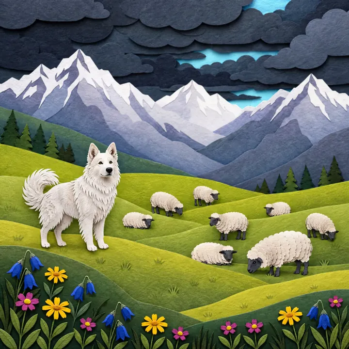
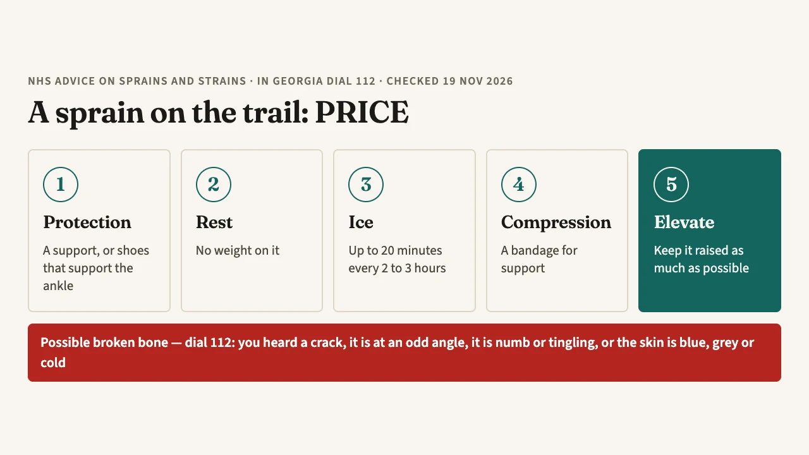

- Emergency
- 112
- Altitude sickness
- usually above 2,500 m (TravelHealthPro)
- Black Rock Lake route
- June–October (park)
- Ushguli
- about 2,100 m (Wikipedia)
- Entry cover
- 30,000 GEL
This page is about Georgia the country, not the US state, and is part of the Georgia Travel Guide. Checked on 19 November 2026.
Where to go: the best-known hiking areas
Four areas come up most often: Svaneti, Kazbegi, Tusheti and Lagodekhi. Each has its own heights, rules and risks.
Our reading. The best hikes in Georgia depend on your fitness, your experience and the month. This list is not a ranking. We give no route distances or day counts: we could not check them against an official source.
Svaneti: Mestia and Ushguli
Our reading: Mestia is the usual starting point for Svaneti walks. Ushguli sits higher, at about 2,100 m.
Heights. According to Wikipedia, Mestia lies at 1,500 m. Wikipedia describes Ushguli as "a community of five medieval villages", "at an altitude of 2,100 metres… near the foot of Shkhara". Both are below the 2,500 m line where altitude sickness usually starts.
The Mestia to Ushguli trek. Our Svaneti guide covers the route between the two. It gives no distance or day count either.
Snow. Wikipedia says Ushguli is "snow-covered for 6 months of the year, and often the road to Mestia is impassable". For the season, see our best time to visit Georgia guide.

Kazbegi
Trails here are covered by the guide of Kazbegi National Park. Its first rule is to contact the park before you set off.
Altitude. The UK health advice says: "Altitude sickness is a risk in parts of Georgia, including Gudauri ski resort, Mount Kazbegi, and Mount Tetnuldi."
Our tip. If you plan to go onto ice or towards the summit, take a guide. For extreme sports, GOV.UK's advice is: "consider going with specialist guides".
More. Our Kazbegi guide covers the walks to Gergeti and Juta.
Tusheti
This remote region has its own national park, which lists 11 tourist trails. Contact the park before you set off.
The park's words. "Please contact Tusheti National Park Administration before visiting any trail," its guide says. It adds: "Tourist season lasts from June to October."
The road in. Wikipedia puts the Abano Pass, which links Kakheti and Tusheti, at 2,826 m. The road over the pass goes above the 2,500 m line; the line refers to where you sleep.
More. See our Tusheti guide for the road, the season and local customs.
Lagodekhi
Lagodekhi National Park has a seasonal route to Black Rock Lake, and two of its trails need a copy of your ID.
Seasons. The Lagodekhi park guide says: "You can enjoy tours whole year round; tourist route 'Black Rock Lake': June-October".
Bring ID. For the Machi fortress and Black Rock Lake trails, the guide says that "for registration it is necessary to hold the copy of your identification document with you".
National park rules
Contact the park before you go, dress for rough ground, carry food and water, and slow down in fog.
From the Kazbegi guide. The Kazbegi National Park guide asks:
- "Please contact Kazbegi National Park Administration before visiting any trail";
- "Please wear coarse trousers and high-top shoes (such as boots)";
- "Take food and water to the field".

Not allowed. All three guides ban fast movement when you cannot see well. Kazbegi's wording is "Fast movement in case of limited vision (Fog, high bushes, and shrubs)". The Kazbegi and Lagodekhi guides also ban pets and allow fires only in specially designated places.
Edges. Lagodekhi bans standing "near rock edge or ravine side closer than 0.5 m". Tusheti asks you not to go nearer than half a metre to the edge of a gorge.
Emergency. Each guide lists "112 emergency number". Our 112 guide explains how to call.
Our tip. Tell your host your route and when you plan to return.
Border lines and when to take a guide
Do not walk towards the lines with Abkhazia and South Ossetia. GOV.UK advises against all but essential travel next to them; if your route runs close, it suggests a professional guide.
What GOV.UK says. The UK regional risks page says "FCDO advises against all travel to the Russian occupied regions of" South Ossetia and Abkhazia. It also "advises against all but essential travel to areas immediately next to the administrative boundary lines".
No markings. The lines "are generally unmarked and away from roads", GOV.UK warns. "Take care not to cross the lines – you could be arrested by the region's self-declared authorities."
A guide. "If you plan to hike close to the administrative boundary lines, consider hiring a professional guide," the same page says.
Your cover. GOV.UK's warnings page adds: "Your travel insurance could be invalidated if you travel against advice from the Foreign, Commonwealth & Development Office (FCDO)."
Help is far. The UK safety page says: "If you get into trouble during hiking, skiing, adventure travel or extreme sports, the emergency response may be limited."
Our tip. Ask the park administration whether your route runs near a boundary line.
Altitude
Altitude sickness usually starts above 2,500 m. The height where you sleep matters most, and the cure is to climb slowly.
The line. TravelHealthPro says altitude illness may occur in people "ascending rapidly to high altitude, usually above 2,500m". Its risk table notes: "The altitudes correspond to sleeping altitude."
Timing. Symptoms do not start on arrival: "typically they occur 6–10 hours after ascent to >2,500m".
Prevention. "The key to preventing high altitude illness is gradual ascent with regular rests days," TravelHealthPro says.
If it gets worse. "Always attempt to descend if symptoms of altitude illness worsen… or if symptoms are severe. Never leave an individual with altitude illness alone."
Where you will be. Mestia (1,500 m) and Ushguli (2,100 m) are below the line, by Wikipedia's figures. The road over the Abano Pass (2,826 m) goes above it; the line refers to where you sleep. Our altitude guide explains symptoms in detail.

Snakes, dogs and weather
The main risks are vipers in early summer, shepherds' dogs, lightning and fast-changing mountain conditions.
Snakes. The UK health advice lists "venomous snakes (vipers), particularly in early summer – few medical facilities outside major towns have anti-venom". Our David Gareja guide sets out the NHS first aid for a snakebite.
Dogs. The Tusheti park guide warns: "During the tourist season visitors may encounter shepherds' dogs." GOV.UK lists "rabies – treatment is available in Tbilisi and major towns". It says: "If you're bitten or scratched by a dog, get medical attention immediately." See our rabies guide.

Storms and fire. "Lightning and wildfires are a risk in summer, particularly in the mountains," GOV.UK says.
Snow and ice. "It can be difficult to get accurate information on mountain conditions, including avalanche risks."
Our tip. Start early and watch the sky. Give flocks of sheep a wide berth.
Sprains, blisters and when to call 112
Treat a sprain with PRICE and a blister with a clean plaster. Dial 112 if a bone may be broken.
Sprains. The NHS advises PRICE for the first 2 to 3 days:
- Protection – protect the injury, for example with a support or shoes that support your ankle;
- Rest – stop activity and keep weight off it;
- Ice – an ice pack, or frozen vegetables wrapped in a tea towel, "for up to 20 minutes every 2 to 3 hours";
- Compression – a bandage to support it during the day;
- Elevate – keep it raised.

A possible break. The NHS lists these signs: "you heard a crack", the part "has changed shape or is pointing at an odd angle", it is "numb, tingling or has pins and needles", or the skin looks blue or grey or "is cold to touch". "You may have broken a bone." The NHS says to call 999 or go to A&E; in Georgia, dial 112.
Blisters. The NHS says to "keep the blister as clean as possible" and "cover blisters with a soft plaster or padded dressing". It adds: "do not burst a blister yourself". Do not wear the shoes that caused it until it heals.
Infection. An infected blister can be "hot and filled with green or yellow pus". The NHS sends UK readers to 111; in Georgia, see a doctor.
Back in the city. For an injury that is not healing, see orthopaedic and trauma doctors in Tbilisi.
Our tip. Pack plasters, a bandage and a spare pair of socks.
Insurance for hiking
The entry rule sets a minimum. It does not decide what your policy covers on a trail.
The entry rule. Visitors need health and accident cover of at least 30,000 GEL for their whole stay; see the entry rule on travel cover.
Your plans. GOV.UK says: "Insurance should cover your itinerary, planned activities and expenses in an emergency." On outdoor activities, it adds: "Make sure your travel insurance covers your activities."
A common mistake. Some online summaries say the entry rule includes mountain rescue. The rule sets a minimum sum and the period of cover; it does not mention mountain rescue.
Our tip. Read your policy before you fly. Check that it names hiking and the heights you plan to reach. Keep a copy on your phone.
Frequently asked questions
Is Georgia good for hiking?
Do I need a guide?
Does my entry cover include hiking?
When is the best time for trekking in Georgia?
Are there snakes on the trails?
Do I need ID on the trails?
Sources
- GOV.UK travel advice for Georgia: safety and security ↑
- GOV.UK travel advice for Georgia: regional risks ↑
- GOV.UK travel advice for Georgia: health ↑
- GOV.UK travel advice for Georgia: warnings and insurance ↑
- Kazbegi National Park: visitor guide ↑
- Lagodekhi National Park: visitor guide ↑
- Tusheti National Park: visitor guide ↑
- TravelHealthPro: altitude illness ↑
- NHS: sprains and strains ↑
- NHS: blisters ↑
- Wikipedia: Mestia (secondary source) ↑
- Wikipedia: Ushguli (secondary source) ↑
- Wikipedia: Abano Pass (secondary source) ↑
- Legislative Herald of Georgia: Government Resolution No. 602 on entry insurance for tourists (Georgian) ↑
This guide is general information, not medical advice: the doctor decides on your care.